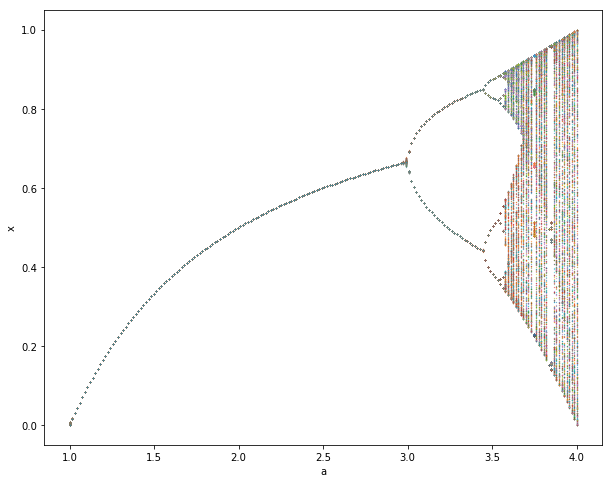
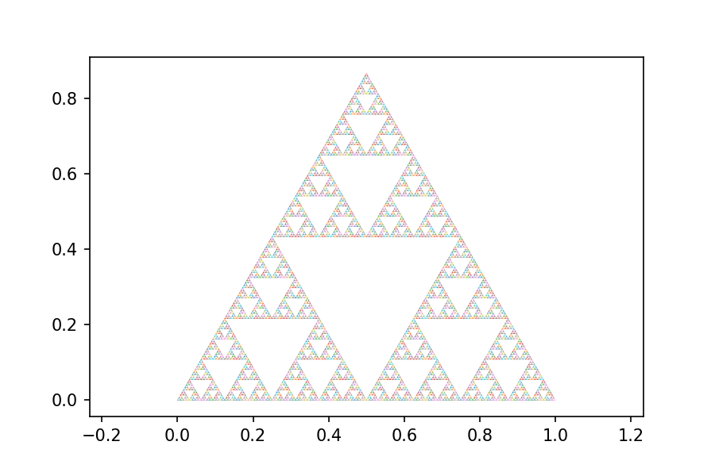

5. Iterative Computation: Exercise Solutions
Contents
5. Iterative Computation: Exercise Solutions#
import numpy as np
import matplotlib.pyplot as plt
%matplotlib inline
1. Newton’s method in n dimension#
Newton’s method can be generalized for \(n\) dimensional vector \(x \in \Re^n\) and \(n\) dimensional function \(f(x)={\bf0} \in \Re^n\) as $\( x_{k+1} = x_k - J(x_k)^{-1}f(x_k) \)\( where \)J(x)\( is the *Jacobian matrix* \)\( J(x) = \mat{\p{f_1}{x_1} & \cdots & \p{f_1}{x_n}\\ \vdots & & \vdots\\ \p{f_n}{x_1} & \cdots & \p{f_n}{x_n}} \)$
Define a function that computes $\( f(x) = \left(\begin{array}{c} a_0 + a_1 x_1^2 + a_2 x_2^2\\ b_0 + b_1 x_1 + b_2 x_2\end{array}\right) \)$ and its Jacobian.
def f(x, a, b, deriv=True):
"""y[0] = a[0] + a[1]*x[0]**2 + a[2]*x[1]**2\\
y[1] = b[0] + b[1]*x[0] + b[2]*x[1]
also return the Jacobian if derive==True"""
y0 = a[0] + a[1]*x[0]**2 + a[2]*x[1]**2
y1 = b[0] + b[1]*x[0] + b[2]*x[1]
if deriv:
J = [[2*a[1]*x[0], 2*a[2]*x[1]],
[b[1], b[2]]]
return np.array([y0, y1]), np.array(J)
else:
return np.array([y0, y1])
Consider the case of \(a = [-1, 1, 1]\) and \(b = [-1, 1, 2]\) and visualize parabollic and linear surfaces.
a = [-1, 1, 1]
b = [-1, 1, 2]
f([1,1],a,b)
(array([1, 2]),
array([[2, 2],
[1, 2]]))
x = np.linspace(-2, 2, 25)
y = np.linspace(-2, 2, 25)
X, Y = np.meshgrid(x, y)
XY = np.array([X,Y]) # (2,25,25) tensor
Z = f(XY, a, b, deriv=False)
ax = plt.figure(figsize=(8,8)).add_subplot(projection='3d')
ax.plot_wireframe(X, Y, Z[0], color='r')
ax.plot_wireframe(X, Y, Z[1], color='g')
ax.plot_surface(X, Y, X*0)
plt.xlabel('x1'); plt.ylabel('x2');
Implement Newton’s method for vectors.
def newton(f, x0, *args, target=1e-6, maxstep=20):
"""Newton's method.
f: should also return Jacobian matrix
x0: initial guess
*args: parameter for f(x,*args)
target: accuracy target"""
n = len(x0) # dimension
x = np.zeros((maxstep+1, n))
y = np.zeros((maxstep, n))
x[0] = x0
for i in range(maxstep):
y[i], J = f(x[i], *args)
if sum(abs(y[i])) < target:
break # converged!
x[i+1] = x[i] - np.linalg.inv(J)@y[i]
else:
print('did not coverge in', maxstep, 'steps.')
return x[:i+1], y[:i+1]
Test how it works from different initial guesses.
newton(f, [0,1], a, b)
(array([[ 0. , 1. ],
[-1. , 1. ],
[-0.66666667, 0.83333333],
[-0.6025641 , 0.80128205],
[-0.6000041 , 0.80000205],
[-0.6 , 0.8 ]]),
array([[ 0.00000000e+00, 1.00000000e+00],
[ 1.00000000e+00, 0.00000000e+00],
[ 1.38888889e-01, 2.22044605e-16],
[ 5.13642341e-03, -2.22044605e-16],
[ 8.19204194e-06, 0.00000000e+00],
[ 2.09714468e-11, 0.00000000e+00]]))
newton(f, [1,1], a, b)
(array([[ 1.00000000e+00, 1.00000000e+00],
[ 2.00000000e+00, -5.00000000e-01],
[ 1.27777778e+00, -1.38888889e-01],
[ 1.03579611e+00, -1.78980527e-02],
[ 1.00076655e+00, -3.83275644e-04],
[ 1.00000037e+00, -1.83449494e-07]]),
array([[ 1.00000000e+00, 2.00000000e+00],
[ 3.25000000e+00, 0.00000000e+00],
[ 6.52006173e-01, -1.11022302e-16],
[ 7.31939122e-02, -1.11022302e-16],
[ 1.53383708e-03, 6.93889390e-17],
[ 7.33798146e-07, 3.19839641e-17]]))
for i in range(10):
x0 = np.random.uniform(-2, 2, size=2)
x, y = newton(f, x0, a, b)
plt.plot(x[:,0], x[:,1])
plt.plot(x[-1,0], x[-1,1], 'o')
2. Bifurcation and Chaos#
A value of \(x_k\) that stays unchanged after applying a map \(f\) to it (i.e. \(x_k = f(x_k) = x_{k+1}\)) is called a “fixed point” of \(f\).
Let us consider the logistic map $\( x_{k+1} = a x_k(1 - x_k) \)$
Plot \(x_{k+1}=ax_k(1-x_k)\) along with \(x_{k+1}=x_k\) for \(a=0.5, 2, 3.3\).
What are the fixed points of these maps?
def logistic(x, a):
"""logistic map: f(x) = a*x*(1-x)"""
return a*x*(1 - x)
x = np.linspace(0, 1, 50)
# plot with different levels of a
A = [0.5, 2, 3.3]
leg = []
for a in A:
y = logistic(x, a)
plt.plot(x, y)
leg.append('a = {}'.format(a))
plt.legend(leg)
plt.plot([0,1], [0,1]) # x=f(x) line
plt.xlabel('x'); plt.ylabel('f(x)')
plt.axis('square');
From \( x = a x(1 - x) \), we have \( x(a - 1 - ax) = 0 \), so the fixed points are $\( x = 0, \frac{a-1}{a} \in [0, 1].\)\( and the derivative \)f’(x)=a(1 - 2x)\( are \)\( x = a, 2-a.\)$
def logistic_fp(a):
"""fixed points and derivatives"""
x = (a-1)/a
if x>0 and x<1:
return [0, a], [x, 2-a]
else:
return [0, a]
for a in A:
print(logistic_fp(a))
[0, 0.5]
([0, 2], [0.5, 0])
([0, 3.3], [0.6969696969696969, -1.2999999999999998])
A fixed point is said to be “stable” when nearby values of \(x_k\) also converge to the fixed point after applying \(f\) many times; it’s said to be “unstable” when nearby values of \(x_k\) diverge from it.
Draw “cobweb plots” on top of each of the previous plots to visualize trajectories. Try several different initial values of \(x_k\).
Are the fixed points you found stable or unstable?
How is the stability related to the slope (derivative) of \(f(x_k)=ax_k(1-x_k)\) at the fixed point?
def iterate(f, x0, a, steps=100):
"""x0: initial value
a: parameter to f(x,a)"""
x = np.zeros(steps+1)
x[0] = x0
for k in range(steps):
x[k+1] = f(x[k], a)
return x
def cobsplot(x):
"""cobsplot of trajectory x"""
plt.plot([0,1], [0,1]) # x=f(x) line
x2 = np.repeat(x, 2) # duplicate items
plt.plot(x2[:-1], x2[1:], lw=0.5) # (x0,x1), (x1,x1), (x1,x2),...
plt.xlabel('$x_k$'); plt.ylabel('$x_{k+1}$');
plt.axis('square');
For \(a=0.5\), the only fixed point \(x=0\) is stable.
x = np.linspace(0, 1, 50)
a = 0.5
y = logistic(x, a)
plt.plot(x, y) # plot the map
xt = iterate(logistic, 0.1, a, 200)
cobsplot(xt) # plot the trajectory
For \(a=2\), the fixed point at \(x=0\) is unstable and \(x=0.5\) is stable.
a = 2
y = logistic(x, a)
plt.plot(x, y) # plot the map
xt = iterate(logistic, 0.1, a, 200)
cobsplot(xt) # plot the trajectory
For \(a=3.3\), the fixed point at \(x=0\) is unstable and \(x\simeq0.7\) is also unstable.
a = 3.3
y = logistic(x, a)
plt.plot(x, y) # plot the map
xt = iterate(logistic, 0.1, a, 200)
cobsplot(xt) # plot the trajectory
The fixed point is stable if the gradient at the fixped point is \(|f'(x)|<1\).
3: optional) A bifurcation diagram is a plot of trajectories versus a parameter.
draw the bifurcation diagram for parameter \(a\) \((1 \le a \le 4)\), like below:

Hint:
Use the
logistic()anditerate()functions from the previous lecture.For each value of \(a\), show the trajectory (i.e., the values that \(x_k\) took over some iterations) of the map after an initial transient.
Since \(x_k\) is 1D, you can plot the trajectory on the y axis. For example, take 200 points in \(1 \le a \le 4\), run 1000 step iterations for each \(a\), and plot \(x\) after skipping first 100 steps.
n = 200 # points in a
a = np.linspace(1, 4, n)
s = 1000 # steps for each a
x = np.zeros((n, s+1))
for i, ai in enumerate(a):
x[i] = iterate(logistic, 0.1, ai, s)
plt.figure(figsize=(10, 8))
plt.plot(a, x[:,100:], '.', markersize=0.5)
plt.xlabel('a')
plt.ylabel('x');
3. Recursive call and fractal#
Draw the Sherpinski gasket as below.

def shelpinsky(x0=0, x1=1, y=0, e=1e-2):
"""draw a Shelpinsky gasket
x0, x1: left, right corners
y: base height
a: fraction to fill
e: minimal resolution"""
u = x1 - x0 # size
if abs(u) < e:
plt.plot([x0, x0+u/2, x1, x0], [y, y+u*np.sqrt(3)/2, y, y], lw=0.2) # triangle
else:
shelpinsky(x0, x0+u/2, y, e)
shelpinsky(x0+u/4, x1-u/4, y+u*np.sqrt(3)/4, e)
shelpinsky(x0+u/2, x1, y, e)
plt.axis('equal');
plt.figure(figsize=(10,10))
shelpinsky()